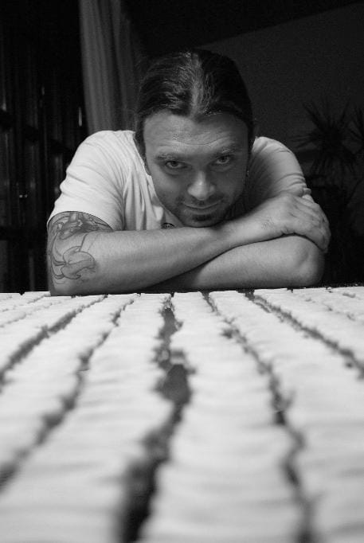

Home-made Pasta

Description
Home-made pasta is not so difficult.
Ingredients
- 400 g white flour
- 4 eggs
- almond milk (yes)
- salt (in the water)
Steps
- Make a mount with the flour on a table and create a hole in the middle
- Break the eggs inside this hole, beat them gently with a fork and slowly add flour from the rig of the mount
- Finish combining with hands, adding some almond milk until you obtain a homogeneous, elastic dough that doesn't stick
- Wrap in a clean cloth and let rest for half-an-hour in the fridge
- Take off pieces from the dough and shape it the way you like with a pasta machine
- When it's all done, pour the pasta in two liters of boiling water and taste from time to time until it's good, and serve